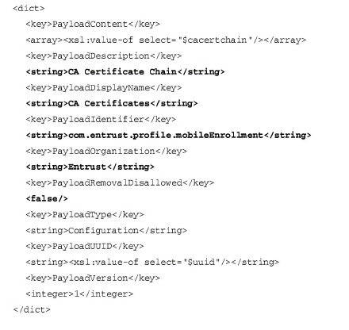
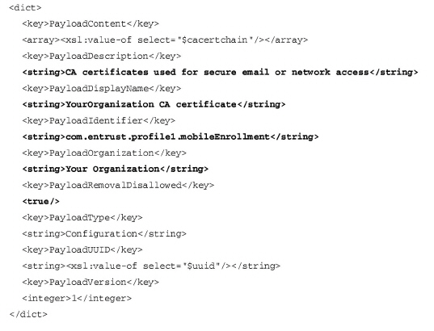

|
IdentityGuard Server 13.0 Administration Guide |
|
IdentityGuard Server 13.0 Administration Guide |
This step is optional, and applies only to iOS.
You can customize what users see, and what they are permitted to do, when they install an iOS profile containing your CA certificate, or CA certificate chain. This profile is created during the mobile enrollment process, when users are asked to download your CA certificate.
Follow the instructions below.
To customize iOS certificate download options
1. In an XML editor, open trustedcertchain.mobileconfig located here:
<SSM_ROOT>\webapps\server\IdentityGuardSelfService\WEB-INF\xml
where <SSM_ROOT> is the installation directory for the Self-Service Module.
2. Edit the items in bold to reflect those of your organization.

● PayloadDescription: A description of the iOS profile being installed.
● PayloadDisplayName: The name of the profile that is displayed on the user’s iOS device.
● PayloadIdentifier: By convention, a dot delimited string that uniquely identifies the iOS profile. This is the string by which profiles are differentiated. If a profile is installed that matches the identifier of another profile, it overrides it (instead of being added).
It is recommended that you leave PayloadIdentifier at its default. The only reason to change it is if your environment includes multiple Self-Service Modules, and each is communicating with a distinct CA hierarchy, and users’ certificates are signed by these different CAs. If this is your scenario, then you must create PayloadIdentifier values that are specific to each Self-Service Module/CA hierarchy. If you do not make this configuration, then during the CA certificate download, the different profiles (and therefore, CA certificates) will overwrite each other.
If your environment includes multiple Self-Service Modules, but they are communicating with a single CA hierarchy, then there is no need to set different PayloadIdentifier values.
Note: If you are using Administration Services instead of Self-Service Module, the above applies to Administration Services.
● PayloadOrganization: The name of your organization.
● PayloadRemovalDissallowed: If True, users are unable to remove the CA profile from their device. Default: False.
Below is an example of how an organization might configure the file.

3. Save the file.
There is no need to restart the Self-Service Module.